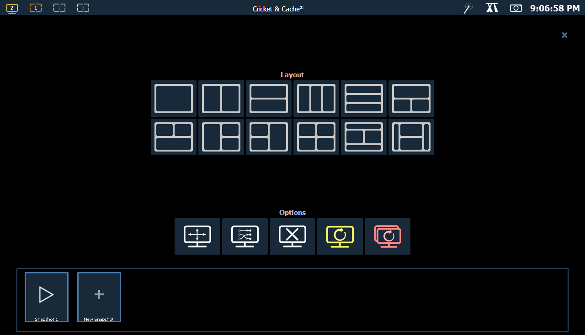
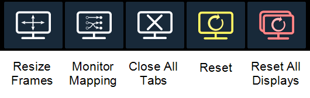
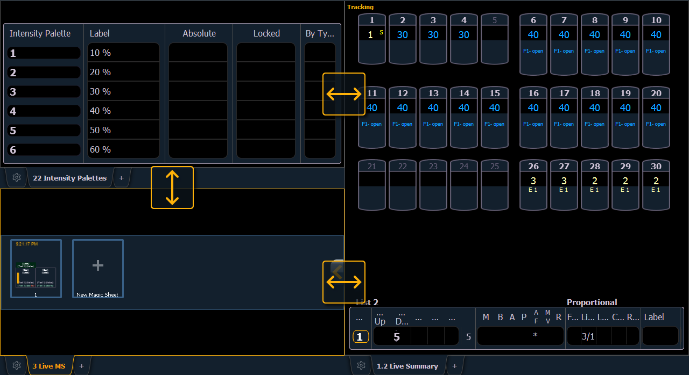
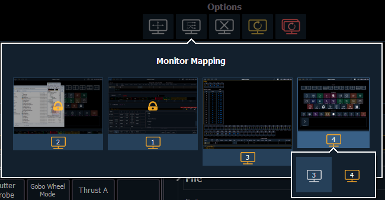

Selecting the display controls icon will grant you access to the Layout Options . Choose the layout icon for the arrangement and number of frames you want to use on the monitor.

This screen also offers options for opening and closing tabs as well as resizing and resetting the monitor(s).

Select this icon to resize frames in any of the workspaces on the monitor. After selecting, resizing tools will appear between frames of the workspace and you can select and drag the resize tool icons to adjust sizing as needed.

Select this icon to arrange your monitors without having to go into the ECU. This function allows you better control of your snapshots (About Snapshots ).
Click on a monitor to display the available numbers, and then click on the number to assign it.
Note: On-board touchscreens are locked, and their arrangement cannot be changed.
Note: A left to right arrangement is recommended.

Select this icon to close all of the tabs in the active workspace on this monitor only.
This icon will close all of the tabs and frames and will reset the layout for the active workspace to a single frame displaying the Home Screen, from which you can select new tabs to open.
This icon will close all of the tabs and frames on all monitors, reset all layouts to a single frame, and return their workspaces to the Home Screen, from which you can select new tabs to open.